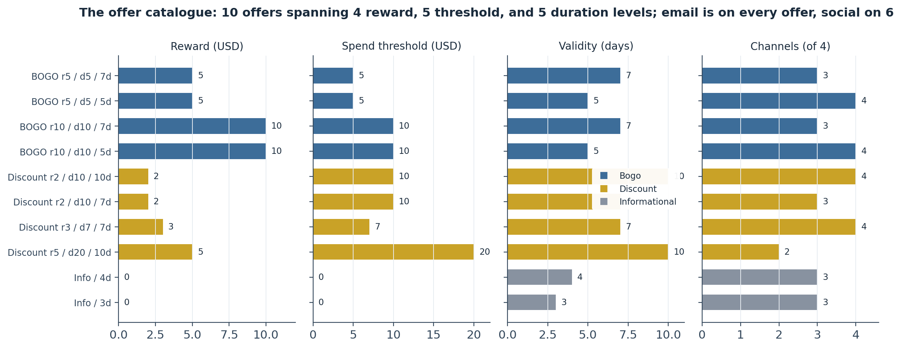
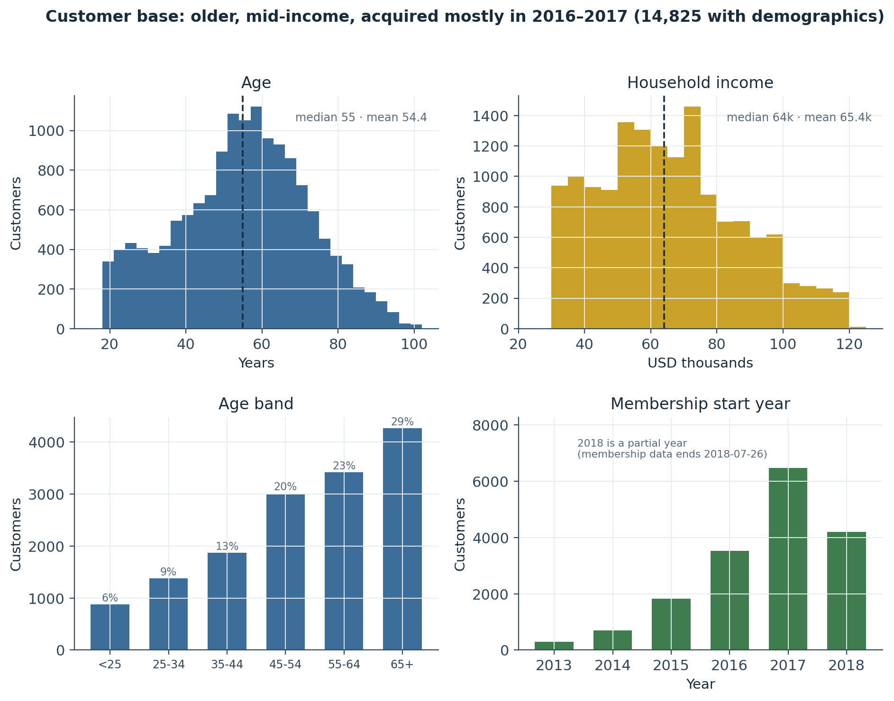
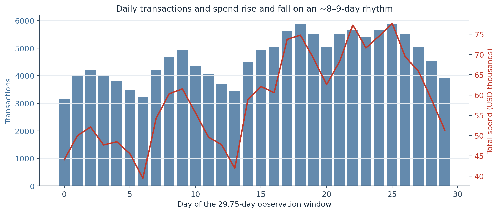
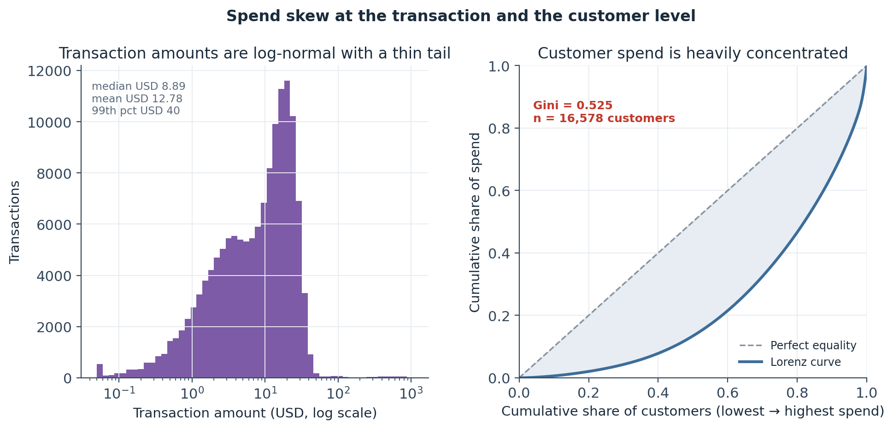
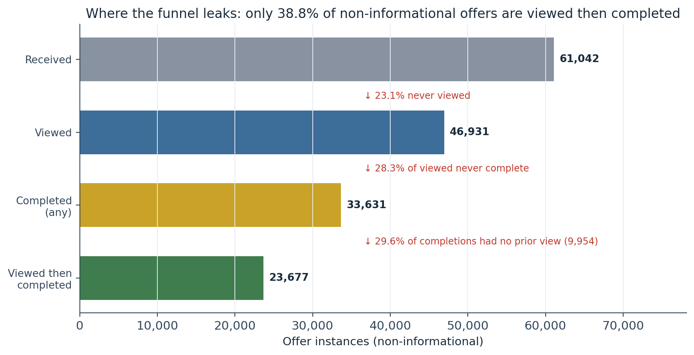
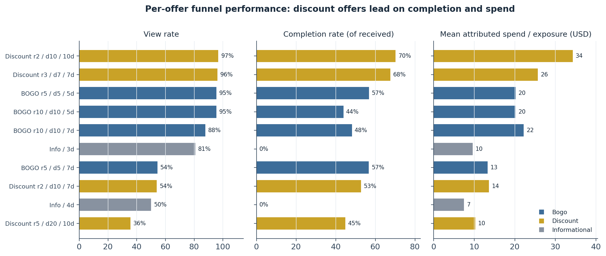
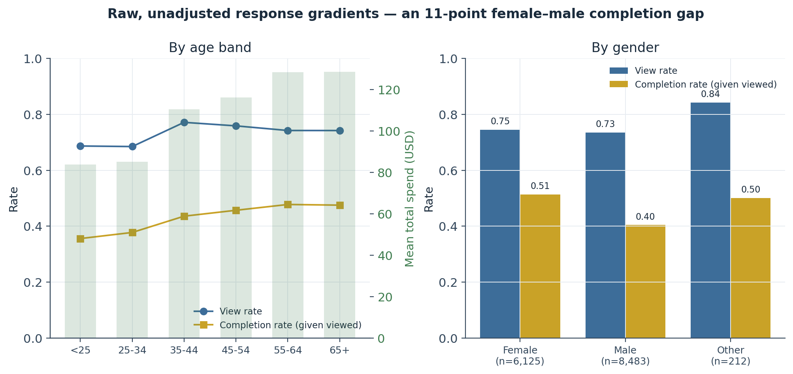
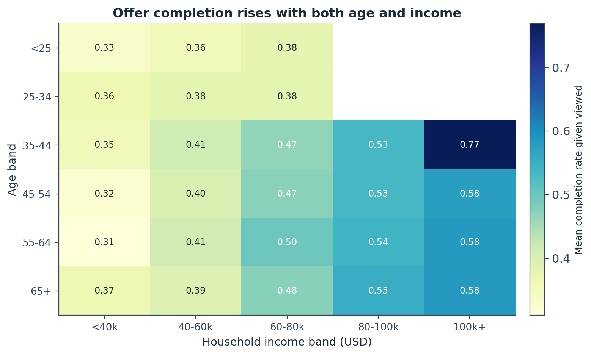
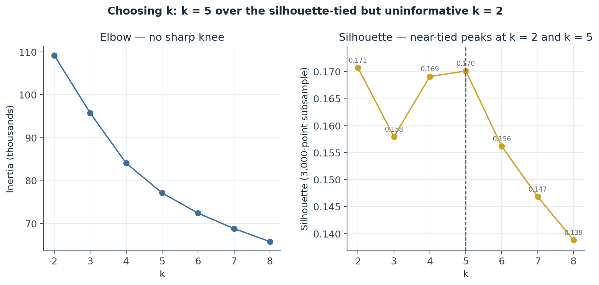
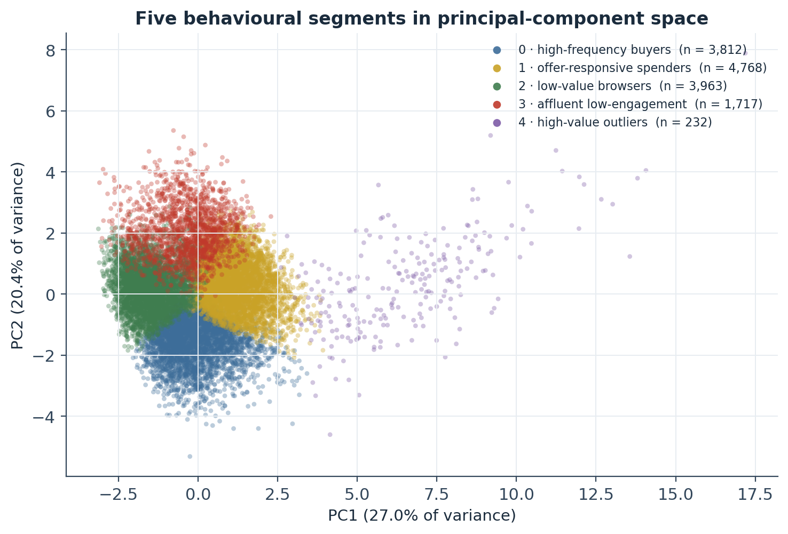

Behavioural Profiling of an Offer-Response Cohort: The Funnel, the Spend Concentration, and Five k-Means Segments That Anchor a Causal Analysis
An exploratory read of 17,000 customers, 10 offers, and 306,534 events — a received → viewed → completed funnel where 29.6% of completions were never viewed, a Gini of 0.525 on customer spend, and a five-segment partition chosen over the silhouette-optimal but uninformative k = 2.
An exploratory and segmentation analysis that sets up a five-notebook causal study of promotional-offer response. The catalogue: 10 offers (4 BOGO, 4 discount, 2 informational) spanning 4 reward, 5 spend-threshold, and 5 duration levels — so raw cross-offer response rates cannot be compared without adjustment. The funnel: of 61,042 non-informational offers, 23.1% are never viewed, a further 28.3% of viewed offers never complete, and 29.6% of the 33,631 completions had no prior view — organic purchases that cleared the threshold and must be excluded from a “true response” count. Spend concentration: transaction amounts are heavy-tailed (mean USD 12.78 vs median USD 8.89) and customer spend has a Gini of 0.525, which is why the downstream primary metric uses trimmed means and bootstrap intervals. Segments: k-means on 9 RFM-plus-funnel features yields five behavioural strata — high-frequency buyers, offer-responsive spenders, low-value browsers, affluent low-engagement, and a 232-customer high-value outlier cluster — persisted as segment_id for use as covariates and heterogeneity strata.
exploratory data analysis, customer segmentation, k-means clustering, RFM analysis, offer funnel, conversion funnel, last-click attribution, intention-to-treat, spend concentration, Lorenz curve, Gini coefficient, silhouette score, heterogeneous treatment effects, Starbucks capstone, Python, scikit-learn
Abstract
This exploratory analysis characterises the substrate for a five-notebook causal study of how customers respond to promotional offers, using the Starbucks/Udacity capstone simulated-offers dataset (17,000 customers, a 10-offer catalogue, and 306,534 events over a 29.75-day window). Three descriptive results shape the downstream identification and estimation choices. First, the offer catalogue is deliberately multi-armed — four reward levels, five spend thresholds, five durations, and an uneven channel mix — so raw cross-offer response rates confound offer attributes and cannot be compared directly. Second, the received → viewed → completed funnel leaks at every stage: of the 61,042 non-informational offer instances, 23.1% are never viewed, a further 28.3% of viewed offers never complete, and 29.6% of the 33,631 completions occurred without a prior view — organic purchases that happened to clear the spend threshold, which must be excluded from any “true response” count. Third, spend is heavily concentrated: transaction amounts are heavy-tailed (mean USD 12.78, median USD 8.89) and customer total spend has a Gini coefficient of 0.525, which motivates trimmed-mean and bootstrap estimators for the downstream primary metric rather than raw means. A k-means partition on nine standardised recency–frequency–monetary and funnel features produces five interpretable behavioural segments — high-frequency buyers (n = 3,812), offer-responsive spenders (n = 4,768), low-value browsers (n = 3,963), affluent low-engagement customers (n = 1,717), and a 232-customer high-value outlier cluster — chosen at k = 5 over the silhouette-optimal but analytically useless k = 2. Segment labels, including −1 for the 2,508 customers outside the feature space, are persisted for use as covariates and heterogeneity strata.
Keywords: exploratory data analysis, customer segmentation, k-means clustering, RFM, offer funnel, last-click attribution, intention-to-treat, spend concentration, Gini coefficient, heterogeneous treatment effects
Introduction
The dataset records a promotional-offer rollout as an already-run experiment: over roughly 30 days, 17,000 loyalty-programme members received, viewed, and completed offers drawn from a catalogue of ten, and made 138,953 purchases. The analytical goal of the wider project is causal — to estimate whether receiving or viewing an offer increases spending above what a customer would have done anyway — and that goal imposes requirements on the exploratory pass. It is not enough to describe the data; the description has to surface the specific facts an identification strategy depends on: how the offers differ from one another, where the response funnel loses people, how skewed the outcome distribution is, and whether the customer base contains behaviourally distinct groups that might respond differently.
This piece answers those four questions in turn and hands the results forward as a set of constraints. It is deliberately descriptive — no treatment effect is estimated here, and the raw group differences reported under “Response by demographic group” are shown as exploratory context, not findings. Every number is recomputed from the persisted Gold tables produced by the project’s ETL stage; the k-means step is re-run from those tables under a fixed seed.
Method
Data source
The analysis uses five Gold-layer tables built by the project’s medallion ETL pipeline from the Starbucks / Udacity Data Scientist Nanodegree capstone simulated-offers data (offer portfolio, customer profile, event transcript), distributed on Kaggle. The tables and grains are: dim_offer_gold (one row per offer, n = 10), offer_events_gold (one row per offer instance — a customer × offer × received-time triple — n = 76,277), transactions_gold (one row per purchase, n = 138,953), customer_features_gold (one row per customer, n = 17,000), and offer_performance_gold (one row per offer, pre-aggregated funnel and spend metrics). The observation window is 714 hours (29.75 days) from the start of the rollout.
Variables and measures
Offer attributes. offer_type (BOGO / discount / informational), reward (USD paid on completion), difficulty (USD that must be spent to complete), duration (validity in days), and four binary channel flags (email, mobile, social, web).
Customer demographics. age, income, gender, and the derived age_band / income_band, available for 14,825 of 17,000 customers; the remaining 2,175 were sentinel-encoded at source and carry a has_demographics = False flag.
RFM and funnel features. Per customer: recency_hours (hours from last purchase to window close), n_transactions, total_spend, mean_spend, n_offers_received / _viewed / _completed, view_rate, and completion_rate_given_viewed (viewed-then-completed ÷ viewed). A completion is credited to an offer only if the customer viewed it before the qualifying purchase; a purchase that clears the threshold without a prior view is not a response.
Analytic approach
Univariate and bivariate summaries throughout. Spend concentration is quantified with a Lorenz curve and its Gini coefficient over customers with positive spend. The behavioural segmentation is k-means (Lloyd’s algorithm; k chosen by inspecting the inertia elbow and the silhouette coefficient over k = 2…8, the latter on a fixed 3,000-customer subsample) on nine z-standardised features, fitted on the 14,492 customers with both demographic and transactional coverage; the fitted partition is visualised in the first two principal components. Customers outside that feature space receive an explicit segment_id = −1 rather than an imputed cluster.
Software
Python 3.10 with pandas and numpy for the summaries, scikit-learn (StandardScaler, KMeans, PCA, silhouette_score) for the segmentation, and matplotlib for the figures. The k-means fit uses random_state = 42 and n_init = 10; re-running from the Gold tables reproduces the segment sizes and profiles reported here exactly.
Results
The offer catalogue
Ten offers were in circulation: four BOGO, four discount, and two informational. They span reward levels of 0, 2, 3, 5, and 10 USD; spend thresholds of 0, 5, 7, 10, and 20 USD; durations of 3, 4, 5, 7, and 10 days; and an uneven channel mix — every offer goes out by email, nine include mobile, eight include web, but only six include social (Figure 1, Table 1). This heterogeneity is the reason a raw comparison of response rates across offers is uninterpretable: the offer that converts best also happens to be a low-threshold, long-duration, four-channel discount, and those attributes cannot be separated from the offer’s identity without a model. Assignment volume is near-uniform — every offer was received between 7,571 and 7,677 times — so differences in downstream response are genuine, not an artefact of exposure imbalance.
Figure 1
The Offer Catalogue as a Four-Panel Fingerprint

Note. “Spend threshold” is the difficulty field — the amount a customer must spend to trigger the reward. The narrow, hard-to-clear Discount r5 / d20 / 10d offer (reward 5, threshold 20, web + email only) is the structural opposite of the top performer.
Table 1
The Ten-Offer Catalogue and Its Funnel Performance (n = 76,277 offer instances)
| Offer | Type | Reward | Threshold | Duration | Channels | Received | View rate | Completion rate | View → completion | Spend / exposure |
|---|---|---|---|---|---|---|---|---|---|---|
| Discount r2 / d10 / 10d | discount | 2 | 10 | 10 d | web, email, mobile, social | 7,597 | 96.8% | 70.2% | 63.6% | USD 34.28 |
| Discount r3 / d7 / 7d | discount | 3 | 7 | 7 d | web, email, mobile, social | 7,646 | 96.2% | 67.6% | 60.0% | USD 25.67 |
| BOGO r10 / d10 / 7d | bogo | 10 | 10 | 7 d | email, mobile, social | 7,658 | 87.7% | 48.2% | 39.1% | USD 22.20 |
| BOGO r5 / d5 / 5d | bogo | 5 | 5 | 5 d | web, email, mobile, social | 7,571 | 95.5% | 56.7% | 49.1% | USD 20.21 |
| BOGO r10 / d10 / 5d | bogo | 10 | 10 | 5 d | web, email, mobile, social | 7,593 | 95.5% | 43.9% | 38.2% | USD 20.17 |
| Discount r2 / d10 / 7d | discount | 2 | 10 | 7 d | web, email, mobile | 7,632 | 54.0% | 52.7% | 52.2% | USD 13.64 |
| BOGO r5 / d5 / 7d | bogo | 5 | 5 | 7 d | web, email, mobile | 7,677 | 54.4% | 56.7% | 51.1% | USD 13.31 |
| Discount r5 / d20 / 10d | discount | 5 | 20 | 10 d | web, email | 7,668 | 35.6% | 44.9% | 49.8% | USD 10.24 |
| Informational / 3d | informational | 0 | 0 | 3 d | email, mobile, social | 7,618 | 80.8% | — | — | USD 9.62 |
| Informational / 4d | informational | 0 | 0 | 4 d | web, email, mobile | 7,617 | 50.0% | — | — | USD 7.47 |
Note. Sorted by mean attributed spend per exposure (descending). Completion rate = completed ÷ received (intention-to-treat); view → completion = viewed-then-completed ÷ viewed (treatment-on-treated). Informational offers have no completion criterion. Spend per exposure divides attributed spend by all instances distributed.
The customer base
Of 17,000 customers, 14,825 (87.2%) carry demographics and 2,175 (12.8%) do not — a sentinel-encoded block at source, kept in scope as an explicit “anonymous” stratum rather than imputed or dropped. Among those with demographics, age is roughly bell-shaped and older than a general consumer population (mean 54.4, median 55, range 18–101), income spans a truncated USD 30,000–120,000 (mean 65,405, median 64,000), and gender runs 57% male, 41% female, 1% other. Age-band mass sits at the top: the 65+ band alone holds 29% of the demographic base, and customers 45 or over are roughly 72% of it. Membership acquisition ramped steeply — from ~290 sign-ups in 2013 to ~6,500 in 2017 — with 2018 a partial year (Figure 2). Both age and income show hard endpoints (101 and USD 120,000) that look like source-data caps rather than natural tails, which matters if either enters a downstream model as a continuous covariate.
Figure 2
Demographic Composition of the 14,825 Customers with Recorded Demographics

Note. The 2,175 customers without demographics are excluded from this figure but retained in every other analysis. The 2018 membership bar is a partial year (data ends 2018-07-26).
Transactional behaviour over the 30-day window
Daily transaction volume and total spend do not trend smoothly — they rise and fall on an ~8–9-day rhythm, from ~3,200 transactions and ~USD 39,000 spend on the quietest days (around days 6 and 13) to ~5,900 transactions and ~USD 78,000 on the busiest (around days 17–19 and 25). The spacing matches the offer durations (3–10 days), which is consistent with the periodicity being driven by overlapping offer-validity windows rather than a calendar effect; it means any day-level analysis downstream should not treat days as exchangeable (Figure 3).
Figure 3
Daily Transaction Count and Total Spend Across the Observation Window

Note. Left axis: transactions (bars). Right axis: total spend in USD thousands (line). The dip-and-peak spacing tracks the 3–10-day offer durations.
The spend distribution is severely right-skewed at every level. Transaction amounts have a mean of USD 12.78 against a median of USD 8.89, a 99th percentile of USD 40.02, and a maximum of USD 1,062.28 — on a log scale the body is roughly log-normal with a thin tail (Figure 4, left). At the customer level, total spend over the window has a Gini coefficient of 0.525 across the 16,578 customers with positive spend: the lower-spending 40% of customers account for roughly 10% of spend, the top 20% for roughly 45–50% (Figure 4, right). Restricting to active customers, median recency is 60 hours, median frequency is 7 transactions, and median total spend is USD 72.41 against a mean of USD 107.10 — a ~48% mean-over-median gap. This concentration is the reason the downstream primary-metric estimator uses trimmed means and bootstrap confidence intervals: with a Gini this high, a handful of large spenders can move an untrimmed mean by more than a realistic treatment effect.
Figure 4
Spend Skew at the Transaction Level and Concentration at the Customer Level

Note. Left panel excludes the small number of zero-amount rows for the log axis. Right panel is over customers with positive spend in the window.
The offer funnel
For the 61,042 non-informational offer instances, the received → viewed → completed funnel leaks at three points (Figure 5). From received to viewed is a 23.1% drop — roughly a quarter of offers are never seen. From viewed to completed is a further 28.3% drop. The third leak is the one that matters for attribution: of the 33,631 completions, only 23,677 were viewed then completed in the correct order, so 29.6% of completions (9,954 instances) had no prior view. Under the viewed-before-completed rule, those 9,954 are organic purchases that cleared the spend threshold, not responses to the offer — the operative completion figure going forward is 23,677, not 33,631. This is the intention-to-treat versus treatment-on-treated distinction, and it is the single most important thing this exploratory pass establishes for the causal work.
Figure 5
The Non-Informational Offer Funnel and Its Three Leak Points

Note. Informational offers (15,235 instances) are excluded — they have no completion criterion. “Completed (any)” counts every completion event; “viewed then completed” additionally requires the view to precede the completion.
Per offer, the spread is wide and does not follow reward size (Figure 6, Table 1). The two low-reward, long-duration discount offers lead on every measure — view rates near 97%, completion rates of 70% and 68%, and USD 34 and USD 26 mean spend per exposure. The BOGO r10 / d10 / 7d offer draws views (88%) but converts poorly (48% completion, 39% view-to-completion) despite carrying the same USD 10 spend threshold as the top discount offer, which converts at 70%. Whether that gap is a reward-structure effect (BOGO vs discount), a duration effect, or something else is precisely the confound-control problem the causal notebooks exist to solve; this table is its descriptive starting point.
Figure 6
Per-Offer View Rate, Completion Rate, and Mean Attributed Spend per Exposure

Note. Completion rate is of all received (intention-to-treat). The two informational offers show 0% completion by construction.
Response by demographic group
These are raw, unadjusted group means with no significance testing — exploratory context, not findings. Both view rate and completion rate rise with age: completion-given-viewed moves from 36% in the under-25 band to roughly 47–48% across the 45+ bands, and mean total spend rises from USD 84 to USD 129 over the same range (Figure 7, Table 2). By gender, female customers complete at 51% against male customers’ 40% — an ~11-point gap on near-identical view rates (75% vs 74%) — and spend more on average (USD 141 vs USD 100). Crossing age with income, completion rises with both dimensions roughly additively, from ~0.33 in the youngest, lowest-income cell to ~0.58 in the oldest, highest-income cells (Figure 8). The gender gap in particular is large enough to warrant a formal subgroup test — but that test belongs downstream under a pre-registration discipline, not here.
Figure 7
Unadjusted View Rate, Completion Rate, and Spend by Age Band and by Gender

Note. Restricted to the 14,820 customers with demographics who received at least one offer. Rates are customer-level means; no adjustment and no significance testing.
Figure 8
Mean Completion Rate (Given Viewed) by Age Band × Income Band

Note. Blank cells are structurally empty — in the simulated data income and age are positively coupled, so no customer under 35 has income ≥ USD 80,000. The 35–44 × 100k+ cell (0.77) is n = 8 and should be read as noise.
Table 2
Unadjusted Response by Age Band and by Gender (customers with demographics who received an offer)
| Group | n | Mean view rate | Mean completion rate (given viewed) | Mean total spend |
|---|---|---|---|---|
| Age < 25 | 876 | 0.687 | 0.356 | USD 83.87 |
| Age 25–34 | 1,380 | 0.685 | 0.378 | USD 85.12 |
| Age 35–44 | 1,869 | 0.772 | 0.436 | USD 110.43 |
| Age 45–54 | 3,012 | 0.759 | 0.457 | USD 116.27 |
| Age 55–64 | 3,420 | 0.742 | 0.478 | USD 128.41 |
| Age 65+ | 4,263 | 0.742 | 0.475 | USD 128.55 |
| Gender: female | 6,125 | 0.746 | 0.514 | USD 140.98 |
| Gender: male | 8,483 | 0.735 | 0.404 | USD 99.59 |
| Gender: other | 212 | 0.843 | 0.501 | USD 124.32 |
Note. completion_rate_given_viewed is undefined for customers with zero viewed offers and excluded from that column’s mean.
Behavioural segmentation
k-means was fitted on nine standardised RFM-plus-funnel features for the 14,492 customers with full coverage. The inertia curve has no sharp elbow; the silhouette coefficient peaks at k = 2 (0.171) and again, near-tied, at k = 5 (0.170), with a dip at k = 3 (Figure 9). The silhouette-optimal k = 2 is rejected: a two-way split carries barely more information than a single median cut and is useless as a covariate or heterogeneity stratum for the downstream analysis. k = 5 — the next silhouette peak, and the smallest k at that quality level with enough strata to be useful — is chosen instead.
Figure 9
Choosing k: Inertia Elbow and Silhouette Coefficient over k = 2…8

Note. Silhouette computed on a fixed 3,000-customer subsample for speed. k = 5 is the local maximum after the k = 3 dip.
The five segments partition the covered customers into four broad groups of 1,700–4,800 and one small outlier cluster, well separated in principal-component space (PC1 27.0%, PC2 20.4% of variance; Figure 10, Table 3):
- Segment 0 — high-frequency buyers (n = 3,812): the most recently active (mean recency 45 h) and by far the most frequent (14.6 transactions), with many small purchases (mean USD 9.9) and solid response (view 0.79, completion 0.59). Youngest of the large segments (age 46), mid-income.
- Segment 1 — offer-responsive spenders (n = 4,768, the largest): moderate recency and frequency but the highest completion rate (0.67) and largest per-transaction spend among the large segments (USD 21.9). Older (age 63) and highest-income (USD 83k).
- Segment 2 — low-value browsers (n = 3,963): lowest total spend (USD 33) and mean spend (USD 6.0), and a completion rate of just 0.14 despite a not-unusual view rate (0.62) — they see offers and rarely act.
- Segment 3 — affluent low-engagement (n = 1,717): recency of 243 hours, more than three times any other segment’s, the lowest frequency (3.8), a low completion rate (0.28), but the second-highest income (USD 76k) — affluent but dormant.
- Segment 4 — high-value outliers (n = 232): total spend USD 829 and mean spend USD 106, roughly 5–10× the next segment, with response behaviour like Segment 1’s. k-means separates them cleanly because spend magnitude dominates the standardised feature space.
n_offers_received is 4.3–4.7 across all five, so offer exposure is not what separates the segments — spend magnitude, frequency, recency, and completion do. The labels, plus segment_id = −1 for the 2,508 customers with no demographics or no activity, are persisted to the customer-feature table for downstream use.
Figure 10
The Five Behavioural Segments in Principal-Component Space

Note. Projection is for visualisation only; clusters were fitted in the full nine-dimensional standardised space.
Table 3
k-Means Segment Profiles — Feature Means (k = 5, n = 14,492)
| Segment | n | Recency (h) | Frequency | Total spend | Mean spend | Offers received | View rate | Completion (given viewed) | Age | Income |
|---|---|---|---|---|---|---|---|---|---|---|
| 0 · high-frequency buyers | 3,812 | 45 | 14.6 | USD 136 | USD 9.9 | 4.7 | 0.79 | 0.59 | 46 | USD 51,006 |
| 1 · offer-responsive spenders | 4,768 | 65 | 7.5 | USD 163 | USD 21.9 | 4.5 | 0.80 | 0.67 | 63 | USD 83,343 |
| 2 · low-value browsers | 3,963 | 77 | 6.0 | USD 33 | USD 6.0 | 4.4 | 0.62 | 0.14 | 48 | USD 51,459 |
| 3 · affluent low-engagement | 1,717 | 243 | 3.8 | USD 65 | USD 17.8 | 4.3 | 0.75 | 0.28 | 61 | USD 76,089 |
| 4 · high-value outliers | 232 | 71 | 9.5 | USD 829 | USD 106.3 | 4.6 | 0.81 | 0.64 | 58 | USD 80,819 |
Note. Recency is hours since last purchase; frequency and offer counts are over the 30-day window. Segment integers are arbitrary k-means labels; the descriptive names are assigned from these profiles.
Discussion
Principal findings
Four descriptive facts constrain the causal analysis to follow. (1) The offer catalogue confounds reward, threshold, duration, and channel, so cross-offer response comparisons require adjustment or a within-offer design. (2) The funnel’s third leak — 29.6% of completions with no prior view — means the recorded completion count overstates genuine response by nearly a third (the rate on the received base falls from 55.1% to 38.8%), and the analysis must distinguish intention-to-treat (received) from treatment-on-treated (viewed then completed). (3) Customer spend has a Gini of 0.525, so the primary outcome must be estimated with tail-robust methods. (4) The customer base contains five behaviourally distinct segments — most sharply, two groups (Segments 1 and 0/4) that see and act on offers, one (Segment 2) that sees and does not, and one (Segment 3) that has largely disengaged — that are candidates for heterogeneous-effects analysis.
The mechanism worth carrying forward
The equal-view / unequal-completion pattern recurs at every level of aggregation. The overall funnel shows it (46,931 viewed, 23,677 viewed-then-completed). The per-offer table shows it (BOGO r10 / d10 / 7d: 88% viewed, 39% viewed-then-completed). The demographic cut shows it (female and male view rates within one point; completion rates eleven points apart). And the segmentation shows it as the primary axis of separation — Segments 1 and 2 have similar view rates (0.80 vs 0.62) but completion rates of 0.67 and 0.14. Whatever drives completion conditional on viewing is not the same thing that drives viewing, and it is not offer exposure volume, which is flat across segments. Identifying that driver — customer type, offer attributes, or a genuine causal effect of the offer — is the question the downstream notebooks take up.
Limitations
The data are simulated, and several structural features are artefacts of the simulation rather than consumer behaviour: age and income are positively coupled (no customer under 35 earns ≥ USD 80,000), age and income are hard-capped at 101 and USD 120,000, and the daily periodicity is an artefact of overlapping offer windows. The 2,175 customers without demographics cannot be placed in the demographic analyses or the segmentation and are carried as a separate stratum; any downstream covariate-adjusted estimate must handle them explicitly. The k-means partition is one of several defensible segmentations — a different feature set, distance metric, or k would give different groups — and its role is as a pragmatic stratification variable, not a claim about latent customer types. All demographic and per-offer differences reported here are unadjusted and untested.
Conclusion
The offer rollout can be read as an experiment, but only after three corrections: separate the offers by their attributes, separate viewed-then-completed from merely completed, and estimate spend with tail-robust statistics. The five-segment partition and the demographic strata give the downstream analysis the subgroups it needs to ask whether the offer’s effect is uniform or concentrated. Nothing here estimates that effect; that is the next notebook’s work.
References
Gini, C. (1921). Measurement of inequality of incomes. The Economic Journal, 31(121), 124–126. https://doi.org/10.2307/2223319
Harris, C. R., Millman, K. J., van der Walt, S. J., Gommers, R., Virtanen, P., Cournapeau, D., Wieser, E., Taylor, J., Berg, S., Smith, N. J., Kern, R., Picus, M., Hoyer, S., van Kerkwijk, M. H., Brett, M., Haldane, A., del Río, J. F., Wiebe, M., Peterson, P., … Oliphant, T. E. (2020). Array programming with NumPy. Nature, 585, 357–362. https://doi.org/10.1038/s41586-020-2649-2
Lloyd, S. P. (1982). Least squares quantization in PCM. IEEE Transactions on Information Theory, 28(2), 129–137. https://doi.org/10.1109/TIT.1982.1056489
Lorenz, M. O. (1905). Methods of measuring the concentration of wealth. Publications of the American Statistical Association, 9(70), 209–219. https://doi.org/10.2307/2276207
The pandas development team. (2020). pandas-dev/pandas: Pandas (Version latest) [Computer software]. Zenodo. https://doi.org/10.5281/zenodo.3509134
Pedregosa, F., Varoquaux, G., Gramfort, A., Michel, V., Thirion, B., Grisel, O., Blondel, M., Prettenhofer, P., Weiss, R., Dubourg, V., Vanderplas, J., Passos, A., Cournapeau, D., Brucher, M., Perrot, M., & Duchesnay, É. (2011). Scikit-learn: Machine learning in Python. Journal of Machine Learning Research, 12, 2825–2830.
Rousseeuw, P. J. (1987). Silhouettes: A graphical aid to the interpretation and validation of cluster analysis. Journal of Computational and Applied Mathematics, 20, 53–65. https://doi.org/10.1016/0377-0427(87)90125-7
Starbucks, & Udacity. (2018). Starbucks Capstone Challenge simulated offers dataset [Data set]. Retrieved from Kaggle (I. Muliar, mirror). https://www.kaggle.com/datasets/ihormuliar/starbucks-customer-data
Descriptive study; no estimate here supports a causal claim. Figures and every headline number were regenerated from the Gold tables — the k-means segmentation re-run under a fixed seed reproduces the notebook’s segment sizes and profiles exactly.